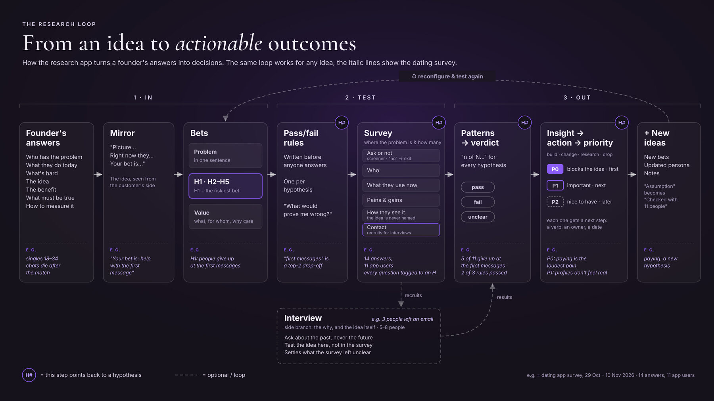
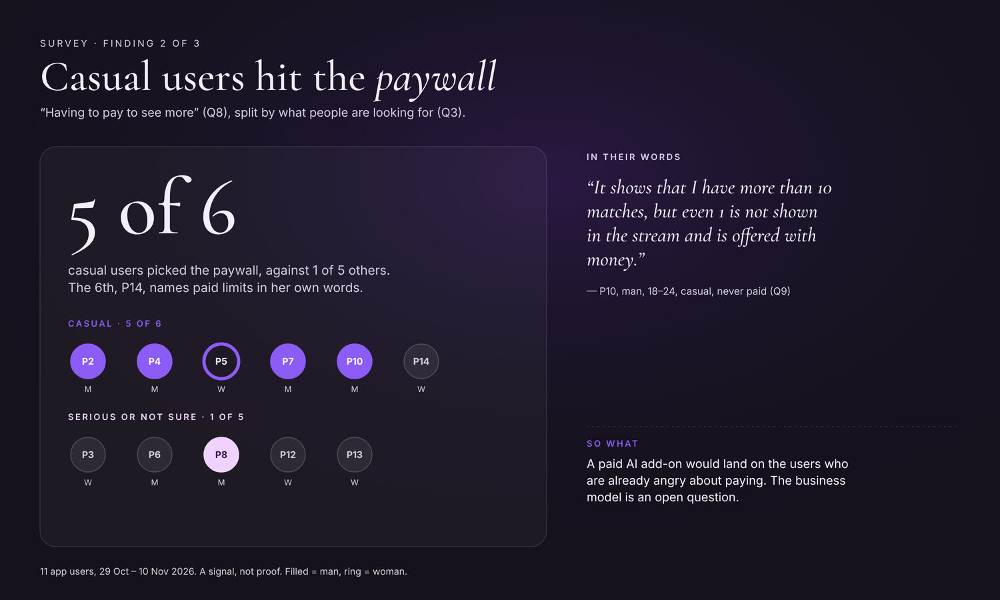
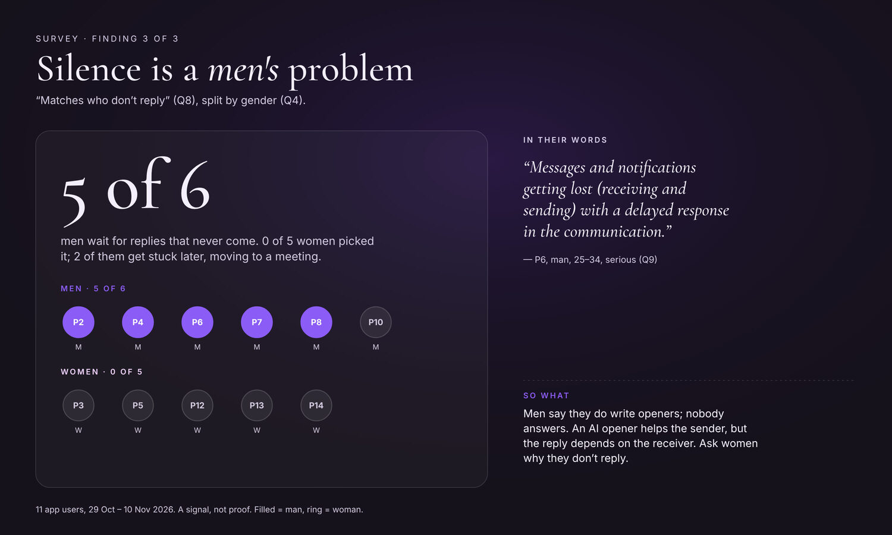
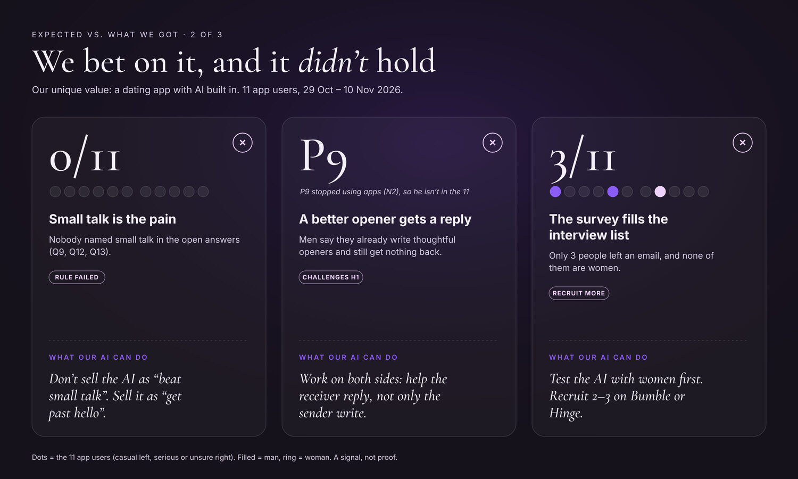

Founders often ask friends "would you use this?" and hear a polite yes. This app turns one sentence about an idea into research that can prove it wrong.
"Fall in love with the problem, not the solution." The rule the app is built on
PlanResearchSynthesizeDesignBuild
Plan
Start with one sentence
The first screen asks a single question: what are you building? Before any research, the app rewrites the idea from the customer's side, so the founder starts from the problem people have, not the feature they want to build.
Viewport A. One question, one input. A short progress line shows where you are.
Viewport B. The idea, rewritten from the customer's side. Projects stay in the sidebar.
There is no account. Projects are saved in the browser only, and "Restore from a backup" brings them back. People can try it without handing over an email.
Plan
Pick how to learn
Then the founder picks a method. The four cards follow the order I learned in my Google UX course: start at your desk, check the money, count with a survey, and understand why with interviews. Each card says what it costs in people and time, so nobody runs interviews when a desk search would answer the question.
Viewport C. Four methods, each with its cost in people: none, AI estimates, many quick answers, 5 to 8 deep ones.
Research
Desk research: the competitor audit
The audit explains direct and indirect competitors in plain words, with an example, then fills a table with two of each: what they offer, who it's for, price, strengths and weaknesses. Every cell can be changed, and the whole audit copies out in one click.
Viewport D. Two direct and two indirect competitors, loading into an editable table.
Research
Survey: count how common it is
The survey screen starts with the decision, not the questions: what you'll decide, who should answer, when to send it, how many answers to aim for, how long it takes, and how answers stay private. Then come the questions, grouped by what they test.
Viewport E. The plan comes first. Then copy the survey, or turn it into a Google Form.
Bias check, live while you edit
Would you use an app that reminds you to drink water?
Future question · yes/no question
Tell me about the last time you forgot to drink water during a workday.
Click any line to change the wording. If the new wording leads people to an answer, the app flags it while you type.
Result · a real study, run with the app
The result: a dating app idea, tested
To see if the app works, I ran a real study with it. The idea on the table was a dating app with AI built in, to help people past the first messages. Before anyone builds it, the app tests the problem instead: a 4-minute survey that never mentions AI, with rules written in advance for what would prove the idea wrong.
The study follows the loop the app is built on. The founder's answers become bets, the riskiest bet becomes H1, and every survey question and every result points back to a hypothesis. Here, H1 was: people give up at the first messages.

Viewport F. In, test, out. The italic "e.g." lines are this study.
Before sharing the survey, I wrote three rules that would tell me I was wrong. Writing them first means I can't move the goalposts once the answers arrive.
Rule, written before
What came back
Verdict
"During the first messages" is in the top 2 places people give up
It is #1: 5 of 11
Passed
At least 1 in 4 pick "Conversations die quickly"
4 of 11
Passed
The open answers talk about small talk, not something else
Nobody named small talk. They named silence and paywalls.
Failed
Result · the findings deck
What 11 dating-app users told us
The app's output is a short deck: one idea per slide, every number a count of people, every finding with a quote and a "so what".
Viewport G1 · Who answered. 14 people, 11 of them app users. A screener sends non-users to two "why not" questions, so every number is about real users.
Viewport G2 · Everything on one page. Each spoke is a person, each ring an answer. With 11 people, charts count people, never percentages.
Viewport G3 · Finding 1. 5 of 11 give up at the first messages: the #1 drop-off, and exactly where the AI would come in.

Viewport G4 · Finding 2. 5 of 6 casual users hit the paywall. A paid AI add-on would land on the people already angry about paying.

Viewport G5 · Finding 3. Silence is a men's problem: 5 of 6 men, 0 of 5 women. A better opener helps the sender, but the reply depends on the receiver.

Viewport G6 · Expected vs. what we got. Right about where people quit, wrong about why: 0 of 11 named small talk.
Viewport G7 · The decision. Build it, but change three things: keep the AI free, sell "get past hello", and help both sides reply. Then test in interviews.
Next · Build
From one study to a step in the app
I did this study by hand once, so the app can do it for every founder. I wrote each step down as a rule, and those rules are the spec for the app's new results step: when the survey closes, the founder adds the answers and gets the same folder back.
01 · InConnectThe form's answer sheet, the screener question, the "what are you looking for" question, and the pass/fail rules already saved for each hypothesis
02 · CountClean and comparePeople become P1, P2…, emails become "left an email: yes or no". Every group is compared on every key answer, and a gap of 3+ people is flagged
03 · DecideDraftPass/fail verdicts, expected vs. what we got, and Keep / Change / Test next. The founder edits every line
04 · OutExportA start-here PDF, the findings deck, a spreadsheet and each slide as an image
Built in from what went wrong here
Group people by the answers you then present as findings.
Circular · makes fake correlations
Groups come from one question only. The app won't let you build them from the findings.
Also from this study: pull the answers again right before exporting, because one late answer changed several numbers here, and show counts, never percentages.
General notes
How I built it
I wrote the product spec, designed the flow and built it in plain JavaScript with Claude Code, deployed on Vercel. Every screen asks one thing at a time, and the copy stays in plain words, because the people using it are founders, not researchers.
I made it while working through my Google UX Design certificate courses. Each screen puts one lesson into practice: write a research plan first, ask about the past instead of the future, and pick the cheapest method that answers the question.
I also turned my course notes into a Claude skill: my own research method, written down so an AI assistant follows it step by step, from plan to research to synthesis. I built it from my notes for course 4, on conducting UX research, and from my dating-app survey. I used it for this app, and I keep using it for every study since.
For the dating study, I counted every answer with Python straight from the form's export, then designed and coded the charts in d3 with Claude Code. The founder gets one folder: a two-page "start here" PDF, an 11-slide findings deck, a spreadsheet with every answer and the cross-tabs, and each slide as an image.
Privacy: people appear only as P1 to P14. Emails were replaced with "left an email: yes or no", and one offensive answer was removed. With 14 people, every number is a signal, not proof.
Viewport H. The skill, saved in my Claude account.
ux-research-helper · SKILL.md
Plan → research → synthesize. Always say which step we're on.
Before any data comes in
Write 2 or 3 "I'm wrong if…" rules with numbers, and check the results against them first.